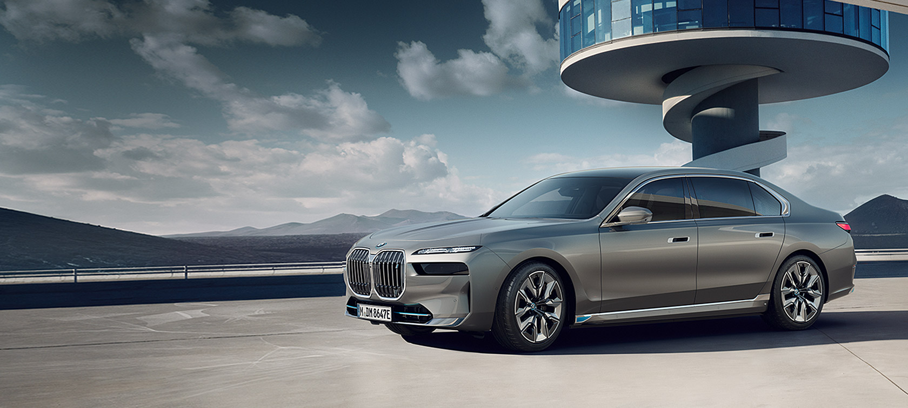
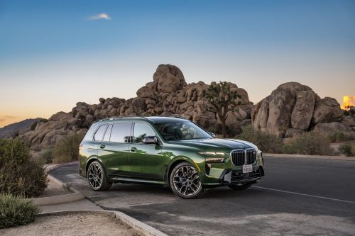
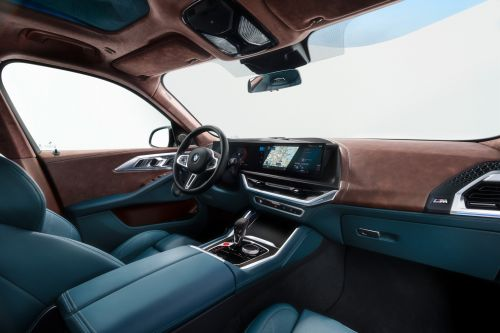
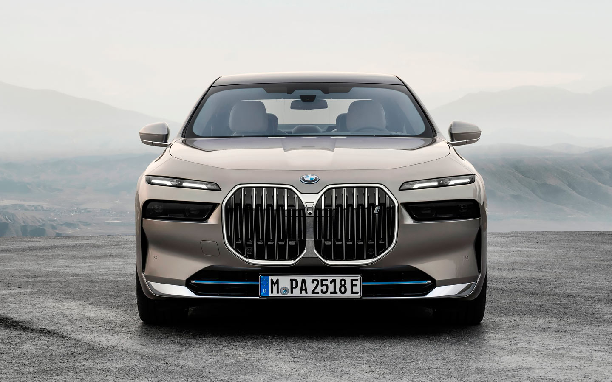

BMW обмежить участь дилерів у продажу автомобілів. Що це означає?

BMW продовжує шокувати автомобільний світ реформами у продажу автомобілів. Не встигла ще заспокоїтися
громадсткість після намірів брати платню за активацію предвстановлених опцій, як стало відомо про нові плани.
BMW має намір в найближчому майбутньому відмовитися від продажів автомобілів через посередників в особі дилерів.
Нова схема реалізації машин безпосередньо через автовиробника дозволить радикально вирішити проблему націнок та
встановлення додаткового обладнання в автосалонах, розповів фінансовий директор баварської марки Ніколя Петер.

Згідно з планами, її запустять у 2024 році, але спочатку «із заводу» пропонуватимуть лише моделі MINI,
а з 2026-го прямі продажі поширять і на BMW.
Відмова від традиційних дилерських центрів відбуватиметься поступово. BMW вже веде «конструктивний діалог»
із продавцями, заявив Петер, щоб запропонувати клієнтам можливість замовляти автомобілі безпосередньо у виробника.

Нова схема передбачає, що покупець зможе вибрати машину з наявних заводі зібраних екземплярів чи оформити
замовлення певну комплектацію з необхідними саме йому опциями. Відповідно не буде дилерських націнок за «допи».
Автосалони виконуватимуть функцію видачі машини клієнту і займатимуться післяпродажним обслуговуванням.

Ідея відмови від заробіткудилерів на продажу автомобілів - не нова. Ії у різних формах тестували Volkswagen,
Renault, Nissan, Hyundai, а китайські виробники гаджетів, які зараз намагаються вийти на автомобільний ринок, взагалі
не планують розвивати класичні дилерські мережі.
Про поетапний переход на прямий продаж автомобілів із заводу раніше оголосив і Mercedes-Benz: компанія вже
найближчими роками скоротить дилерську мережу в Німеччині на 15-20 відсотків. Зараз у Mercedes-Benz налічується
6,5 тисяч точок продажів по всьому світу, тисяча з яких розташовані в Німеччині. Більшість із них до 2025 року
перекваліфікуються на «агентів», тобто вони отримуватимуть комісію від продажу автомобіля, але не вкладатимуться
в рекламу.